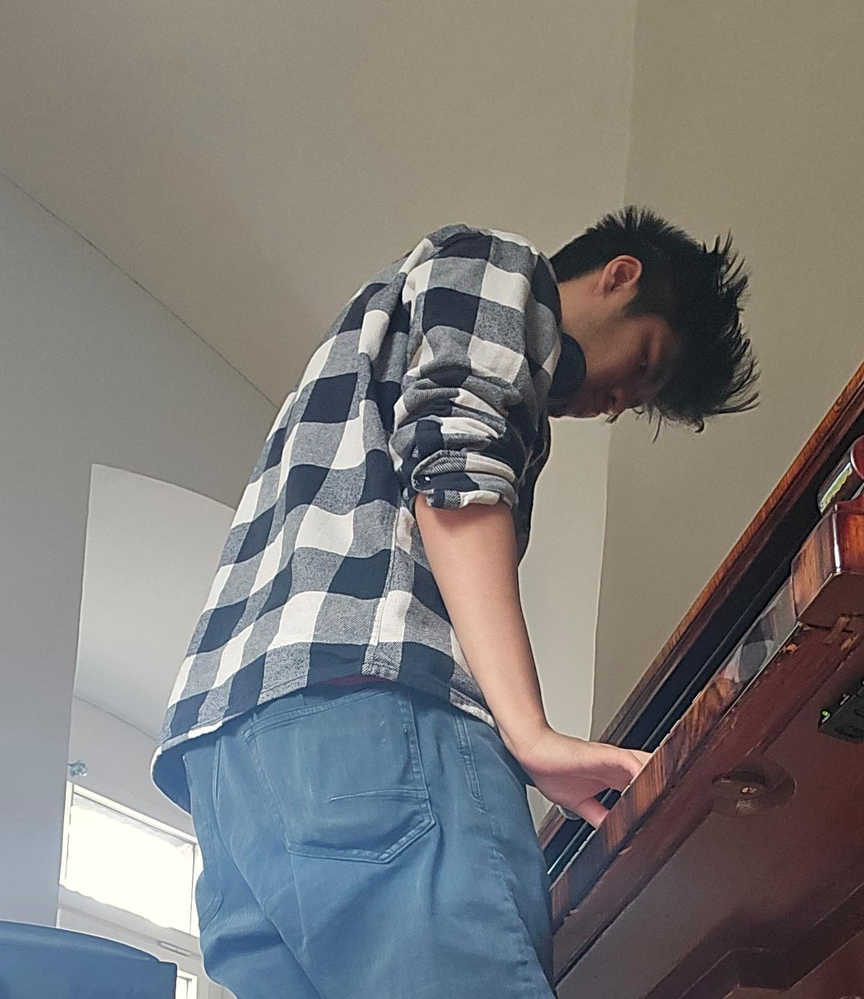

Man lernt nie aus
Momentan absolviere ich die Ausbildung zum ICT-Fachmann bei der WISS Schulen für Wirtschaft, Informatik und Immobilien in Zürich.
Wie man sieht, bringe ich mir aktuell selbst HTML, CSS und JS bei.
Ich begeistere mich für IT und lerne täglich aktiv neues zur Technologie.
BMein Schwerpunkt liegt in den Bereichen IT-Support, Netzwerke und IT-Sicherheit, wobei es mein Ziel ist, mein Wissen nicht nur theoretisch zu erweitern, sondern vorallem praktisch und kontinuierlich auszubauen.
Mein Ziel ist es, mich stetig weiterzuentwickeln und praktische Erfahrungen zu sammeln.
Derzeit suche ich eine zweijährige Praktikumsstelle im ICT-Bereich, in der ich meine Kenntnisse in die Praxis
umsetzen und erweitern kann.
Ich denke, kaum ein Technisches Problem ist nicht zu lösen.
Gerade im IT-Bereich ist mir wichtig, Fehler systematisch zu analysieren und nachhaltig zu beheben.
Darüber hinaus bin ich sehr wissbegierig und eigne mir gerne neue Kenntnisse an.
Meine privaten Projekte haben mir gezeigt, dass die digitale Zukunft noch so viel zu bieten hat.
Zudem ist mir klar geworden, dass der ICT Beruf für mich was ist, da man sich ständig weiter Fortbilden muss, da es immer was neues geben wird. Genau das motiviert mich zu diesem Beruf.
Es gibt immer spannende Themen und Herausforderungen. Diese Zukunft möchte ich gerne mitgestalten!
Mit Hilfe von OpenMediaVault hatte ich in meiner Vergangenheit bereits schon einmal auf meinem Raspberry Pi 5 für mein Zuhause ein NAS eingerichtet.
In meiner Freizeit verbringe ich viel Zeit mit meinen Nichten und meinem Neffen. Oder ich arbeite an neuen Skills und Projekten.
Sonst bin ich eher der lockerer ruhiger Typ, der auch mal für harmlosen Unsinn zu haben ist.
M.B.:
Thanh habe ich als interessierten und aufmerksamen Menschen kennengelernt.
Obwohl er meiner Meinung nach mitunter etwas Zeit braucht, sich in Gruppen zu integrieren, ist er im Grunde sehr loyal und empathisch.
Er kann sich mit viel Geduld in Themen einarbeiten und sich Dinge selbst erarbeiten.
Ausserdem ist er immer gerne bereit, anderen sein Wissen und seine Hilfe weiterzugeben.
Dabei ist er weder aufdringlich noch überheblich.
D.H.:
Thanh ist mir als neugieriger und engagierte Persönlichkeit aufgefallen.
Er nimmt sich die Zeit, Dinge wirklich zu verstehen und zeigt dabei eine bemerkenswerte Ausdauer.
Auch wenn er ruhig wirkt, bringt er sich mit der Zeit ein und überzeugt durch sein verlässliche und rücksichtsvolle Art.
Er arbeitet strukturiert, denkt mit und findet oft eigenständig Lösungen.
Besonders positiv ist, dass er sein Wissen gerne weitergibt und andere unterstützt.
Seine ruhige, hilfsbereite und ehrliche Art macht die Zusammenarbeit mit ihm sehr angenehm.
K.A.:
Thanh zeichnet sich durch seine hohe Eigeninitiative und Lernbereitschaft aus.
Er setzt sich aktiv mit neuen Themen auseinander. Dabei zeigt er den Willen,
sich kontinuierlich zu verbessern. Seine Motivation, sich weiterzuentwickeln ist deutlich spürbar.
M.G.:
Thanh ist ein angenehmer Teamkollege, der durch seine respektvolle und offene Art zur Zusammenarbeit beiträgt.
Er geht konstruktiv auf andere ein. In der Kommunikation bleibt er lösungsorientiert, was besonders wertvoll ist.
Er arbeitet zuverlässig und gewissenhaft. Aufgaben erledigt er sorgfältig und termingerecht, wobei er Verantwortung für seine Arbeit übernimmt.
Auf ihn ist Verlass, auch wenn es anspruchsvoller wird. Seine strukturierte Art hilft ihm, auch unter Druck den Überbblick zu behalten.
K.K.:
Thanh ist manchmal echt eine Überraschung. Er überzeugt mich mit seiner beharrliche Art. Wenn er sich ein Ziel setzt, bleibt er dran und lässt sich auch von Rückschlägen nicht entmutigen.
Er arbeitet sich Schritt für Schritt vor und zeigt dabei eine starke innere Motivation, Probleme wirklich zu verstehen und zu lösen.
Diese Ausdauer ist bemerkenswert.